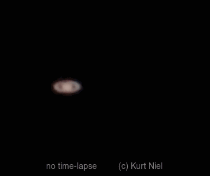

As the earth rotates we can see the virtual movement of the sun across the sky. The aim of the
project Earth L.A.T. 12:00 is to visualize this movement.
The local apparent time (LAT) 12:00 is defined as the time the sun appears on the local south meridian – at which point the sun is located directly above / the suns station is at its south-most point. Sundials show LAT by the moving shadow. They are a measure of time since thousands of years.
Our goal is to produce a 24/7 live video stream of shadows crossing the 12:00 line all over the world. Every few minutes the live stream switches to the next sundial – so one can follow LAT 12:00 as the earth rotates and to get a real sense of our spinning globe.
Anyone can start a sundial which is basically a stick casting a shadow on a flat surface. The hardware required to do this could be e.g. a RaspberryPI+Cam (U$ 100 + U$ 5/month for transfer costs). The system also has to be correctly set up and programmed. The images are then transferred via FTP to the server, which automatically selects the displayed image.
We stand on a globe which is rotating around its own axis and which is orbiting the sun (that's common sense - but there are some people who are not sure about it). Because the earth is that huge in relation to our bodies and most of our direct environment - desks, trees, houses, mountains, rivers, etc. - which takes the same movement as us we we hardly realize the rotation.
Yes, we can figure out the rotation by numbers: The earth has a diameter of some 12 700 km/7 900 mi; one 360° rotation takes 23 h 56 min 04 sec; it takes a year for one orbit around the sun; at the equator the rotation speed is supersonic and at the pole it is zero.
But this numbers will not really give us the sense.
Let's take a telescope, fix it to the ground and look through it straight to the sky. The Saturn
stays almost still in space within this short period of time - just the telescope moves by the
rotation of the earth. What we can see is this:

You need to have a telescope to be able to realize the movement - or this site.
You can view this rotation by watching moving shadows caused by moving light sources. This appears to us as a moving shadow cast by a stick fixed in position illuminated by a moving light source. I fact, however, it is the sun which is stationary and the stick, which is attached to the surface of the earth, that is moving.
We can observe something like this:
It is precisely this movement that we want to show. To give you a live imagination of sundials around the world - each of them displays 12:00 L.A.T. in real time. After a few minutes automatically the live view switches to the next-westerly sundial. With enought partners worldwide you can watch sundials 24 h per day/7 days a week each showing high noon at their respective location.
The project is driven by a non-profit organization. Founder and head of this organization is Kurt Niel, Grieskirchen, Austria. He is lecturer at the University of Applied Sciences Upper Austria and holds a professorship in industrial machine vision, and is head of the department metrology and control engineering. Topics in astronomy and sundials are his beside interests.
Further part time members deal with website design and implementation (Michael Mayrhofer, Julian Zeilinger, HTL Grieskirchen), and public relations with upper Austrian schools or international social media channels.
The team as “ARGE Earth LAT 1200” (Barbara Egger, Klaus Aigner, Josef Doppelbauer, HTL Grieskirchen and Kurt Niel) is granted a promotion by the Upper Austrian and Austrian government including grants from the European Union. This grant is used for promotion in social media channels and production of information material.